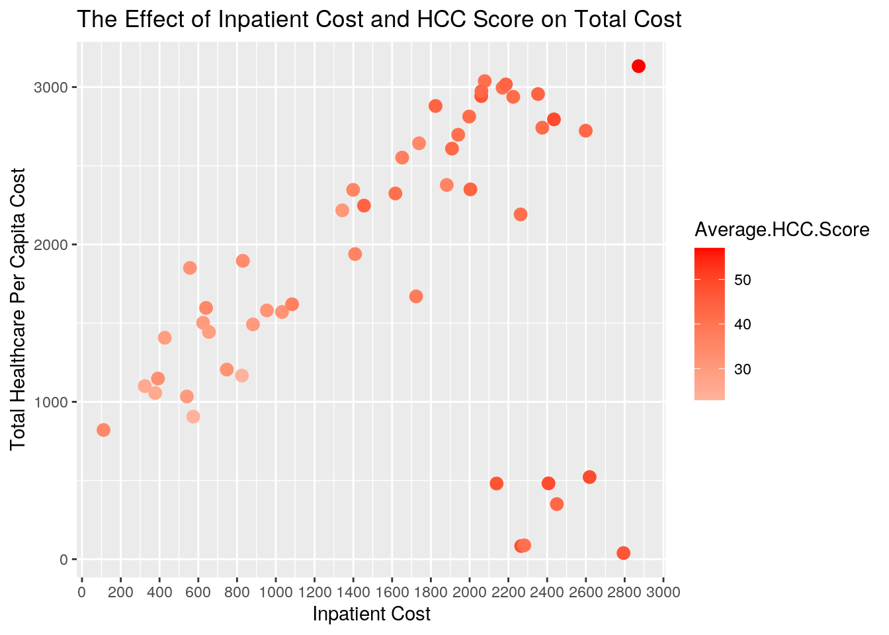
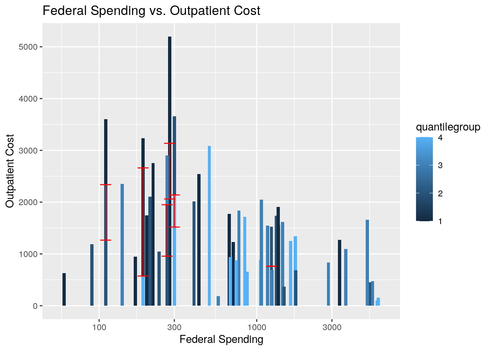

First source: https://www.cms.gov/Research-Statistics-Data-and-Systems/Statistics-Trends-and-Reports/Medicare-Geographic-Variation/GV_PUF State/County Table: All Beneficiaries Second source: https://aspe.hhs.gov/compilation-state-data-affordable-care-act Compilation of State Data on the Affordable Care Act
My project combines a dataset from the Centers for Medicare & Medicaid Services (CMS) with a dataset from the U.S. Department of Health and Human services. Both of these datasets contain Medicare beneficiary data grouped by state from the year 2015. The CMS data was acquired from a database of all insurance claims filed by Medicare beneficiaries enrolled in Medicare's Fee For Service (FFS) program. The Affordable Care Act (ACA) data was acquired from the US Census Bureau database and the source Source: The Executive Office of the President of the United States, “Missed Opportunities: The Consequences Of State Decisions Not To Expand Medicaid.” For my compilation I selected 7 out of 319 distinct variables to include: the percentage decrease in the number of uninsured individuals from 2010, the year the ACA was enacted, to 2015, per capita federal spending on Medicare, per capita total patient cost, inpatient cost, and outpatient cost, and the average age and Hierarchical Condition Category (HCC Score) of Medicare beneficiaries. These variables are of interest to me because I am currently conducting research on value-based healthcare, and they are indicators of efficacy for the ACA. The associations I expect to see are a positive correlation between HCC score and federal spending, and a positive correlation between HCC score and total healthcare cost per capita.
Before joining, the CMS dataset had 3249 observations because it was grouped by county rather than state. I wanted to join the CMS and ACA datasets using state as my common ID variable, so I filtered the CMS dataset by state total before selecting the variables I wanted to include from this dataset and omitting the NAs. The ACA dataset did not have any additional observations beyond the 50 states, so I did not need to drop any before selecting the variables I wanted to include from this dataset and omitting the NAs. Another issue I had with the CMS dataset was that states were listed by their codes rather than their names, so I needed to join it with a third dataset that included state names and codes before combining it with ACA. I also changed 5 variables in CMS to numeric that were not reading as numeric so I would be able to perform summary statistics. Finally, I combined ACA and CMS by the common ID variable state using full_join, which I used because I wanted to return all rows and columns from both CMS and ACA.
library(tidyverse)
library(cluster)
library(kableExtra)
# install.packages('tidyverse') install.packages(kableExtra)
cms <- read.csv("cms2015.csv")
aca <- read.csv("aca.csv")
states <- read.csv("stateabbr.csv")
cms <- cms %>% filter(County == "STATE TOTAL") %>% select(State,
Average.Age, Average.HCC.Score, percapita_cost = Standardized.Per.Capita.Costs,
IP_cost = IP.Per.Capita.Standardized.Costs, OP_cost = OP.Per.Capita.Standardized.Costs) %>%
na.omit()
aca <- aca %>% select(State, decrease_uninsured = Percentage.Point.Decrease.in.Uninsured.Rate,
fed_spending = Net.Increase.in.Federal.Spending) %>% na.omit()
cms <- full_join(cms, states, by = c(State = "Code"))
cms <- cms %>% select(-State, -Abbrev)
cms <- cms %>% mutate_at(1:5, as.numeric) %>% na.omit()
fulldata <- full_join(aca, cms, by = c(State = "State.y"))
# fulldata<- fulldata %>% select(-State.y)The median decrease in the state-wide uninsured population was 5.0%, the minimum was 1.6% in the state of Massachusetts, and the maximum was 10.3% in the state of Nevada, indicating that the ACA was reasonably effective at lowering the number of uninsured individuals across the United States. The median age for Medicare beneficiaries across the U.S. was 71 and the median HCC score was .99, with scores less than 1.0 considered relatively healthy. The median total healthcare cost per capita was 9100 dollars, the minimum was 6294 dollars in Hawaii, and the maximum was 11284 dollars in Louisiana. The median federal spending per capita was 740 dollars, the minimum was 60 dollars in D.C., and the maximum was 5900 dollars in Florida.
States that decreased the percent of their uninsured population in the most, Q3 (5.9%) and Q4 (8.5%), did have overall higher federal spending than states that lowered the percent uninsured by the least, Q1 (3.1%) and Q2 (4.5%). Interestingly, the federal spending for Q4 was 620 dollars higher than Q2 but 239 dollars lower than Q3. States with a higher proportion of outpatient to inpatient spending had lower total costs; states with relatively higher inpatient spending averaged 2125 dollars in per capita federal spending whereas states with relatively higher outpatient spending averaged 481 dollars. There were seven states with below median federal spending but above median healthcare costs: Connecticut, Delaware, D.C., Kansas, Massachusetts, Nevada, and Rhode Island.
summary(fulldata)## State decrease_uninsured fed_spending Average.Age
## Alabama : 1 Min. : 1.600 Min. : 60 Min. : 7.000
## Alaska : 1 1st Qu.: 3.950 1st Qu.: 270 1st Qu.: 8.500
## Arizona : 1 Median : 5.000 Median : 740 Median : 9.000
## Arkansas : 1 Mean : 5.433 Mean :1319 Mean : 9.235
## California: 1 3rd Qu.: 6.600 3rd Qu.:1420 3rd Qu.:10.000
## Colorado : 1 Max. :10.300 Max. :5900 Max. :11.000
## (Other) :45
## Average.HCC.Score percapita_cost IP_cost OP_cost
## Min. :23.00 Min. : 39 Min. : 111.0 Min. : 103
## 1st Qu.:32.00 1st Qu.:1158 1st Qu.: 827.5 1st Qu.: 797
## Median :41.00 Median :1896 Median :1739.0 Median :1270
## Mean :38.31 Mean :1854 Mean :1570.8 Mean :1401
## 3rd Qu.:43.50 3rd Qu.:2710 3rd Qu.:2206.0 3rd Qu.:1928
## Max. :57.00 Max. :3133 Max. :2872.0 Max. :3136
## fulldata %>% select(is.numeric) %>% cor()## decrease_uninsured fed_spending Average.Age
## decrease_uninsured 1.00000000 0.28786130 -0.34981764
## fed_spending 0.28786130 1.00000000 0.05977324
## Average.Age -0.34981764 0.05977324 1.00000000
## Average.HCC.Score 0.04297204 0.53542639 -0.07424445
## percapita_cost -0.09579549 0.09908710 -0.06578609
## IP_cost 0.04042127 0.43841076 -0.17406185
## OP_cost -0.33663059 -0.46884591 0.02673371
## Average.HCC.Score percapita_cost IP_cost OP_cost
## decrease_uninsured 0.04297204 -0.09579549 0.04042127 -0.33663059
## fed_spending 0.53542639 0.09908710 0.43841076 -0.46884591
## Average.Age -0.07424445 -0.06578609 -0.17406185 0.02673371
## Average.HCC.Score 1.00000000 0.25539037 0.87629356 -0.35200777
## percapita_cost 0.25539037 1.00000000 0.29083784 -0.13037926
## IP_cost 0.87629356 0.29083784 1.00000000 -0.27511274
## OP_cost -0.35200777 -0.13037926 -0.27511274 1.00000000fulldata %>% summarize_if(is.numeric, mean, na.rm = T)## decrease_uninsured fed_spending Average.Age Average.HCC.Score percapita_cost
## 1 5.433333 1319.216 9.235294 38.31373 1854.039
## IP_cost OP_cost
## 1 1570.765 1400.588fulldata %>% summarize_if(is.numeric, sd, na.rm = T)## decrease_uninsured fed_spending Average.Age Average.HCC.Score percapita_cost
## 1 2.133229 1595.584 1.069359 7.497974 918.9817
## IP_cost OP_cost
## 1 776.3386 762.5181fulldata %>% summarize_if(is.numeric, median, na.rm = T)## decrease_uninsured fed_spending Average.Age Average.HCC.Score percapita_cost
## 1 5 740 9 41 1896
## IP_cost OP_cost
## 1 1739 1270fulldata %>% summarize_if(is.numeric, min, na.rm = T)## decrease_uninsured fed_spending Average.Age Average.HCC.Score percapita_cost
## 1 1.6 60 7 23 39
## IP_cost OP_cost
## 1 111 103fulldata %>% summarize_if(is.numeric, max, na.rm = T)## decrease_uninsured fed_spending Average.Age Average.HCC.Score percapita_cost
## 1 10.3 5900 11 57 3133
## IP_cost OP_cost
## 1 2872 3136fulldata %>% select(State, percapita_cost) %>% arrange(desc(percapita_cost)) %>%
head() %>% kbl() %>% kable_styling()| State | percapita_cost |
|---|---|
| District of Columbia | 3133 |
| Alabama | 3038 |
| Pennsylvania | 3017 |
| Illinois | 2996 |
| Tennessee | 2974 |
| Ohio | 2956 |
fulldata %>% select(State, decrease_uninsured) %>% arrange(desc(decrease_uninsured)) %>%
head() %>% kbl() %>% kable_styling()| State | decrease_uninsured |
|---|---|
| Nevada | 10.3 |
| Oregon | 10.1 |
| California | 9.9 |
| Kentucky | 9.3 |
| New Mexico | 8.7 |
| West Virginia | 8.6 |
fulldata %>% select(State, fed_spending) %>% arrange(desc(fed_spending)) %>%
head() %>% kbl() %>% kable_styling()| State | fed_spending |
|---|---|
| Florida | 5900 |
| California | 5790 |
| Texas | 5440 |
| New York | 5210 |
| Ohio | 5030 |
| North Carolina | 3670 |
fulldata_quantile <- fulldata %>% mutate(quantilegroup = ntile(decrease_uninsured,
4))
fulldata_quantile %>% group_by(quantilegroup) %>% summarize_if(is.numeric,
mean, na.rm = T) %>% head() %>% kbl() %>% kable_styling()| quantilegroup | decrease_uninsured | fed_spending | Average.Age | Average.HCC.Score | percapita_cost | IP_cost | OP_cost |
|---|---|---|---|---|---|---|---|
| 1 | 3.053846 | 618.4615 | 9.846154 | 38.23077 | 2125.077 | 1481.615 | 1839.615 |
| 2 | 4.546154 | 1069.2308 | 9.461538 | 36.46154 | 1910.615 | 1444.154 | 1302.615 |
| 3 | 5.892308 | 1928.4615 | 8.769231 | 41.38462 | 1555.923 | 1916.462 | 1296.923 |
| 4 | 8.475000 | 1689.1667 | 8.833333 | 37.08333 | 1822.083 | 1430.000 | 1143.417 |
fulldata_prop_op <- fulldata %>% mutate(prop_op = OP_cost/IP_cost)
fulldata_prop_op %>% select(State, percapita_cost, prop_op) %>%
arrange(desc(percapita_cost)) %>% head() %>% kbl() %>% kable_styling()| State | percapita_cost | prop_op |
|---|---|---|
| District of Columbia | 3133 | 0.2200557 |
| Alabama | 3038 | 0.3666987 |
| Pennsylvania | 3017 | 0.5807042 |
| Illinois | 2996 | 0.6179724 |
| Tennessee | 2974 | 0.3318777 |
| Ohio | 2956 | 0.7054824 |
fulldata_prop_op2 <- fulldata_prop_op %>% mutate(quantilegroup = ntile(prop_op,
2))
fulldata_prop_op2 %>% group_by(quantilegroup) %>% summarize_if(is.numeric,
mean, na.rm = T) %>% head() %>% kbl() %>% kable_styling()| quantilegroup | decrease_uninsured | fed_spending | Average.Age | Average.HCC.Score | percapita_cost | IP_cost | OP_cost | prop_op |
|---|---|---|---|---|---|---|---|---|
| 1 | 5.876923 | 2168.846 | 9.076923 | 43.50 | 2104.615 | 2089.962 | 970.4615 | 0.4572193 |
| 2 | 4.972000 | 435.600 | 9.400000 | 32.92 | 1593.440 | 1030.800 | 1847.9200 | 3.3197966 |
fulldata %>% filter(fed_spending <= 740 & percapita_cost >= 9099.93) %>%
kbl() %>% kable_styling()| State | decrease_uninsured | fed_spending | Average.Age | Average.HCC.Score | percapita_cost | IP_cost | OP_cost |
|---|---|---|---|---|---|---|---|
My dataset was already tidy, so I decided to widen the dataset by the categorical variable quantilegroup that I created in the data wrangling section for the purpose of demonstrating the reshaping functions. After widening by quantilegroup using pivot_wider, each of four quantiles from quantilegroup had their own columns. I made the data long again and collapsed the four quantiles into a single column using pivot_longer.
library(tidyverse)
fulldata_wide <- fulldata_quantile %>% pivot_wider(names_from = "quantilegroup",
values_from = "State")
fulldata_wide %>% head() %>% kbl() %>% kable_styling()| decrease_uninsured | fed_spending | Average.Age | Average.HCC.Score | percapita_cost | IP_cost | OP_cost | 2 | 3 | 4 | 1 |
|---|---|---|---|---|---|---|---|---|---|---|
| 4.5 | 1240 | 8 | 41 | 3038 | 2078 | 762 | Alabama | NA | NA | NA |
| 5.0 | 90 | 8 | 23 | 906 | 574 | 1190 | Alaska | NA | NA | NA |
| 6.1 | 570 | 10 | 34 | 1896 | 830 | 186 | NA | Arizona | NA | NA |
| 8.0 | 1060 | 8 | 36 | 2378 | 1882 | 886 | NA | NA | Arkansas | NA |
| 9.9 | 5790 | 10 | 44 | 2247 | 1455 | 103 | NA | NA | California | NA |
| 7.8 | 870 | 9 | 30 | 1502 | 625 | 654 | NA | NA | Colorado | NA |
fulldata_long <- fulldata_wide %>% pivot_longer(cols = (8:11),
names_to = "quantilegroup")
fulldata_long %>% head() %>% kbl() %>% kable_styling()| decrease_uninsured | fed_spending | Average.Age | Average.HCC.Score | percapita_cost | IP_cost | OP_cost | quantilegroup | value |
|---|---|---|---|---|---|---|---|---|
| 4.5 | 1240 | 8 | 41 | 3038 | 2078 | 762 | 2 | Alabama |
| 4.5 | 1240 | 8 | 41 | 3038 | 2078 | 762 | 3 | NA |
| 4.5 | 1240 | 8 | 41 | 3038 | 2078 | 762 | 4 | NA |
| 4.5 | 1240 | 8 | 41 | 3038 | 2078 | 762 | 1 | NA |
| 5.0 | 90 | 8 | 23 | 906 | 574 | 1190 | 2 | Alaska |
| 5.0 | 90 | 8 | 23 | 906 | 574 | 1190 | 3 | NA |
Plot 1 (Medicare Correlation Heatmap): There is a high positive correlation (.83) between average HCC score and per capita cost, suggesting that HCC score is an accurate predictor of population health. There is also a high positive correlation (.89) between per capita cost and inpatient cost, suggesting that inpatient cost is the main driver of high total healthcare costs. Higher federal spending is linked to higher inpatient costs (.42), higher HCC scores (.54), higher per capita costs (.52), and lower outpatient costs (-.37). This means that states with sicker populations and higher ratios of outpatient to inpatient treatment require more federal funding.
Plot 2 (The Effect of Inpatient Cost and HCC Score on Total Cost): This correlation plot displays the relationship between inpatient cost, total healthcare cost, and HCC score. There is a direct relationship between inpatient, total positive healthcare cost, and HCC score; when one of these variables increases the other two tend to increase. This is because higher HCC scores indicate more health conditions, and people with more health conditions are more likely to be admitted to hospitals. Furthermore, higher inpatient cost is correlated strongly with total healthcare cost because it is much more expensive than outpatient treatment, which refers to treatments administered without an overnight stay at a hospital or other medical facility.
Plot 3 (Federal Spending vs. Outpatient Costs): This barplot displays the relationship between outpatient cost, federal spending, and uninsured quantile. The trends in this plot are less apparent because the correlation between federal spending and outpatient cost is not extreme, but you can still see that states with higher outpatient costs tended to require less federal spending. This is not an intuitive trend, but it is likely that states spending more on outpatient treatments do not need to spend as much on inpatient treatments, which lowers healthcare costs overall. States that decreased the number of uninsured individuals by the most, those in Q4, tended to require more federal spending. It makes sense that it would require more federal funding to expand coverage to a larger number of people. The error bars represent the standard error of the mean in OP_cost, and it is clear that there is a lot of variation in outpatient cost.
library(ggplot2)
# plot1
cormat <- fulldata %>% select_if(is.numeric) %>% cor(use = "pair")
tidycor <- cormat %>% as.data.frame %>% rownames_to_column("var1") %>%
pivot_longer(-1, names_to = "var2", values_to = "correlation")
tidycor %>% ggplot(aes(var1, var2, fill = correlation)) + geom_tile() +
scale_fill_gradient2(low = "red", mid = "white", high = "green") +
geom_text(aes(label = round(correlation, 2)), color = "black",
size = 4) + theme(axis.text.x = element_text(angle = 90,
hjust = 1)) + coord_fixed() + ggtitle("Medicare Correlation Heatmap")# plot2
ggplot(fulldata, aes(IP_cost, percapita_cost)) + geom_point(size = 3,
aes(color = Average.HCC.Score)) + scale_color_gradient2(low = "green",
mid = "white", high = "red", midpoint = 1) + scale_x_continuous(breaks = seq(0,
3000, 200)) + xlab("Inpatient Cost") + ylab("Total Healthcare Per Capita Cost") +
ggtitle("The Effect of Inpatient Cost and HCC Score on Total Cost")
# plot3
ggplot(fulldata_quantile, aes(x = fed_spending, y = OP_cost,
fill = quantilegroup)) + geom_bar(stat = "identity", width = 0.02) +
geom_errorbar(stat = "summary", fun.data = "mean_se", width = 0.07,
color = "red") + scale_x_log10() + xlab("Federal Spending") +
ylab("Outpatient Cost") + ggtitle("Federal Spending vs. Outpatient Cost")
To determine the number of clusters to use for my dataset, I first used a silhouette index and visualized it. Two clusters had the highest silhouette index by a large margin, so I selected two (k=2) datapoints to serve as medoids. I initially scaled my numeric variables, but this reduced the goodness of fit by reducing the average silhouette width to .30, so I decided to run cluster analysis (pam) on the unprocessed data.
I visualized the clusters using ggpair, and I found that per capita cost and inpatient cost had the strongest positive correlation at 0.891, while outpatient cost and percent decrease in uninsured had the strongest negative correlation at -0.511. The mean decrease in uninsured was 5.3% and mean federal spending was 748 dollars for cluster 1, and 6.3% and 4913 dollars for cluster 2. I ran a silhouette plot of pam to find that the average silhouette width was .62, which indicates that a reasonable structure has been found. The final plot shows two variables that account for 68% of the variability in the dataset, which could be calculated using PCA.
pam_data <- fulldata %>% select(2:8)
sil_width <- vector()
for (i in 2:10) {
pam_fit <- pam(pam_data, k = i)
sil_width[i] <- pam_fit$silinfo$avg.width
}
ggplot() + geom_line(aes(x = 1:10, y = sil_width)) + scale_x_continuous(name = "k",
breaks = 1:10)# pam<- pam_data %>% scale %>% pam(k=2)
pam <- pam_data %>% pam(k = 2)
# install.packages('GGally')
library(GGally)
library(cluster)
fulldata %>% mutate(cluster = as.factor(pam$clustering)) %>%
ggpairs(columns = c(2:8), aes(color = cluster))plot(pam, which = 2)pam_data %>% mutate(cluster = pam$clustering) %>% group_by(cluster) %>%
summarize_all(mean)## # A tibble: 2 x 8
## cluster decrease_uninsu… fed_spending Average.Age Average.HCC.Sco…
## <int> <dbl> <dbl> <dbl> <dbl>
## 1 1 5.55 2327. 9.13 43.2
## 2 2 5.34 491. 9.32 34.3
## # … with 3 more variables: percapita_cost <dbl>, IP_cost <dbl>, OP_cost <dbl>plot(pam, which = 1)...